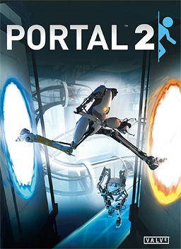

Developer: Valve Corporation
Release date: April 18, 2011
Genre: Puzzle-platform
Game available at: Steam
About the game:
Portal 2 is a puzzle-platform game developed by Valve Corporation. It is the sequel to the critically acclaimed Portal, and continues the story of Chell and GLaDOS.
What I liked about the game:
I enjoyed alot the puzzle mechanics of the game. Despite the game itself not being difficult, the game has a nice difficulty curve that allows you to figure out the puzzles without getting confused. The story is also funny.